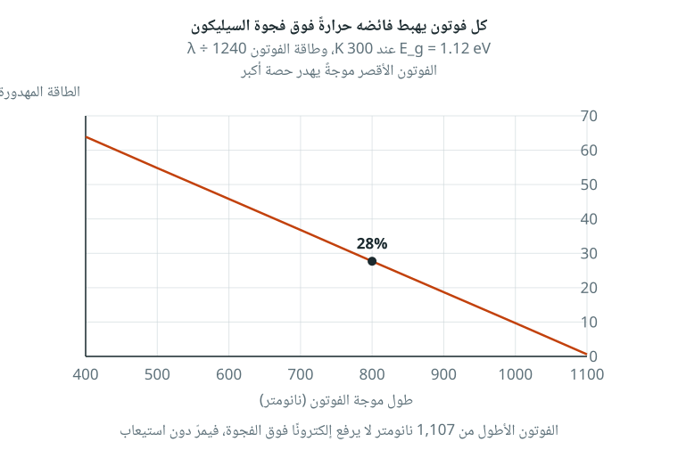

الأثر الكهروضوئي
Photovoltaic Effect
توليد فرق كمون عند امتصاص فوتون طاقته أكبر من فجوة الطاقة في شبه موصل، فيُفصل الزوج إلكترون–ثقب بمجال وصلة p–n قبل أن يتّحد. الفائض فوق الفجوة يضيع حرارةً، وهذا حدّ بنيوي لا هندسي.
الأثر الكهروضوئي توليد فرق كمون عند امتصاص الضوء في مادة شبه موصلة. الفوتون الذي تتجاوز طاقته فجوة الطاقة hν > E_g يحرّر زوجًا من حاملات الشحنة، ويجمع المجال الكهربائي الداخلي في وصلة p–n الإلكترون في جهة والثقب في جهة أخرى قبل أن يعودا للاتحاد، فيظهر تيار.
الخلية السيليكونية ليست مقاومة يزيد تيارها بالضوء فقط، بل مصدر ذو منحنى I–V: تيار دائرة قصيرة، وجهد دائرة مفتوحة، ونقطة قدرة عظمى بينهما. الفرق بين القدرة العظمى وحاصل ضرب التيار في الجهد هو معامل الامتلاء، وهو مقياس جودة الوصلة لا جودة الضوء.
كيف تعمل الظاهرة؟
يمرّ الفوتون إلى السيليكون فيمتصّ طاقته إلكترون من حزمة التكافؤ إذا كانت hν ≥ E_g، فينتقل إلى حزمة التوصيل ويترك ثقبًا. الهبوط الفوري للطاقة بعد التأين يبدّد الفائض (hν − E_g) حرارةً، وهذا الفقد بنيوي لا يُتخلص منه بالهندسة. في منطقة الاستنزاف بوصلة p–n يوجد مجال داخلي ناتج عن انتشار الحاملات وتكوّن شحنة مكانية، وهذا المجال يفصل الزوج قبل إعادة الاتحاد. الحاملات المولَّدة بعيدًا عن منطقة الاستنزاف تعود للاتحاد وتُفقد، ولهذا يُصمّم الباعث رقيقًا لتقصير المسافة التي يقطعها الحامل قبل جمعه.
العلاقة بالأرقام
فجوة السيليكون عند 300 K نحو 1.12 eV، فالفوتون الأطول موجةً القابل للاستيعاب λ = 1240/E_g = 1,107 nm، أي عند حدّ الأشعة تحت الحمراء القريبة. فوتون بطول 800 nm يحمل 1.55 eV، فيهبط 0.43 eV حرارةً، أي 28% من طاقته. وحدة شمسية مساحتها 1.7 m² بكفاءة 22% تعطي نحو 374 W عند الإشعاع القياسي 1,000 W/m² و25 °م، وهو شرط الاختبار المعياري لا الحالة الواقعية.
مفاهيم متقاربة
يُظنّ أن ارتفاع حرارة الخلية يزيد إنتاجها، والعكس: معامل الحرارة للقدرة سالب بنحو −0.3% لكل درجة، فترتفع الخلية في الصحراء 30 °م فوق شرط الاختبار فتفقد قرابة 9% من قدرتها. ويُخلط بين الأثر الكهروضوئي والأثر الحراري للضوء، فالأول فصل شحنات والثاني تسخين. ويُخلط بين كفاءة الخلية وكفاءة الوحدة: الخلية المخبرية تبلغ نحو 26%، والوحدة التجارية الكاملة 21–23% لأن التغليف والفواصل بين الخلايا والزجاج تأخذ نصيبها. ويُخلط كذلك بين التيار والجهد: إضاءة أعلى ترفع التيار بخطية تقريبًا، بينما الجهد يتغير لوغاريتميًّا قليلًا.
حدود التطبيق
النموذج البسيط I = I_ph − I_0·(e^(V/nV_T) − 1) يفشل في ثلاثة مواضع: لا يمثّل المقاومة التسلسلية ولا مقاومة التسريب وهما تحدّدان شكل المنحنى قرب جهد الدائرة المفتوحة؛ ولا يمثّل اعتماد المعاملات على الحرارة؛ ولا يمثّل الخلايا متعددة الوصلات حيث تُكدَّس وصلات بفجوات مختلفة. وثمة حدّ فيزيائي أعمق: الطيف الشمسي أوسع من فجوة واحدة، فالفوتونات الأدنى طاقةً لا تُستوعب والأعلى تهبط حرارةً؛ هذا أصل حدّ شوكلي–كوايسر الذي يضع سقف كفاءة الخلية المفردة عند نحو 33%.

| الكمية | القيمة | المصدر |
|---|---|---|
| فجوة طاقة السيليكون عند 300 K | 1.12 إلكترون فولت | [1] |
| أقصى طول موجة قابل للاستيعاب | 1,107 نانومتر | [1] |
| الإشعاع القياسي عند شرط الاختبار | 1,000 واط/متر مربع | [1] |
| قدرة وحدة 1.7 م² بكفاءة 22% | 374 واط | [2] |
المصادر
- 1 Solar Photovoltaic Technology Basics — U.S. Department of Energy, EERE. www.energy.gov/eere/solar/solar-photovoltaic-technology-basics · اطُّلع عليه 2026-11-16
- 2 Solar PV — capacity and electricity generation — International Energy Agency. www.iea.org/energy-system/renewables/solar-pv · اطُّلع عليه 2026-11-16
- 3 Photovoltaics — U.S. Department of Energy, EERE. www.energy.gov/eere/solar/photovoltaics · اطُّلع عليه 2026-11-16
استشهد بهذا المصطلح
الصيغتان مبنيتان من بيانات الصفحة نفسها: العنوان والتاريخ ورابط النسخة المنشورة.
الأثر الكهروضوئي — Photovoltaic Effect. (2026). ديوان المعرفة — انفراد. https://infiradev.com/diwan/terms/photovoltaic-effect.html
@misc{photovoltaic-effect2026,
title = {الأثر الكهروضوئي},
titleaddon = {Photovoltaic Effect},
howpublished = {{ديوان المعرفة — انفراد} — مرجع علمي عربي},
year = {2026},
url = {https://infiradev.com/diwan/terms/photovoltaic-effect.html},
urldate = {2026-11-16},
note = {مراجعة علمية: مراجعة آلية — ديوان المعرفة (روابط المصادر + عقد المحتوى + وجود الرسم) 2026-11-16}
}
راجعه: مراجعة آلية — ديوان المعرفة (روابط المصادر + عقد المحتوى + وجود الرسم) 2026-11-16 · 2026-11-16 · آخر تحديث 2026-11-16